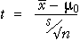

Finding a p-value from the t distribution
The p-value for any test is the probability of getting such an 'extreme' test statistic when H0 is true. When testing the value of a population mean, µ, when σ is unknown, the appropriate test statistic is

Since this has a t distribution (with n - 1 degrees of freedom)
when H0 is true, the p-value is found from a tail area of this
distribution. The relevant tail depends on the alternative hypothesis. For example,
if the alternative hypothesis is for low values of µ,
the p-value is the low tail area of the t distribution since low values of  (and hence t) would support HA over H0.
(and hence t) would support HA over H0.
H0 : μ = μ0
HA : μ < μ0
The steps in performing the test are shown in the diagram below.

Computer software should be used to obtain the p-value from the t distribution.
Saturated fat content of cooking oil
The example on the previous page asked whether the saturated fat content of soybean cooking oil was greater than 15%, based on data from 13 bottles. The population standard deviation was unknown and the hypotheses of interest were,
H0 : μ = 15%
HA : μ > 15%
The diagram below shows the calculations for obtaining the p-value for this test from the t distribution with (n - 1) = 12 degrees of freedom.
Since the probability of obtaining such a high sample mean if the underlying population mean was 15 (the p-value) is only 0.04, we conclude that there is moderately strong evidence that the mean saturated oil content is over 15 percent.
Select Modified Data from the pop-up menu and use the slider to investigate the relationship between the sample mean and the p-value for the test.
Two-tailed test
In some hypothesis tests, the alternative hypothesis allows both low and high values of µ.
H0 : μ = μ0
HA : μ ≠ μ0
In this type of two-tailed test, the p-value is the sum of the two tail areas, as illustrated below.